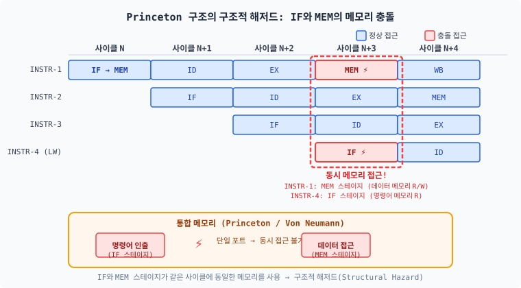
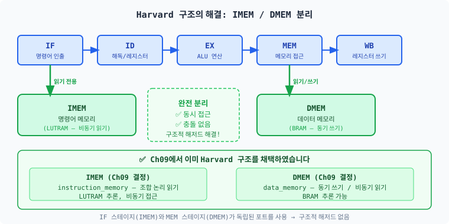
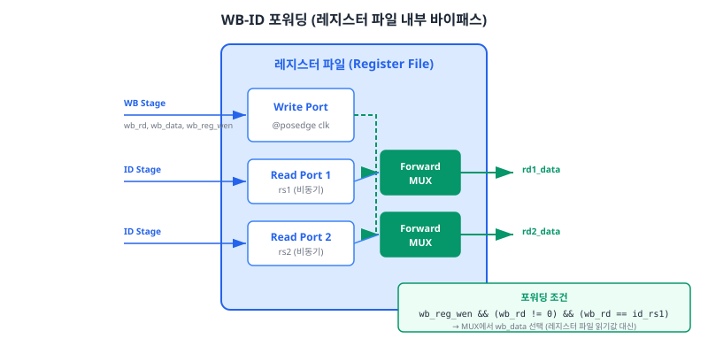
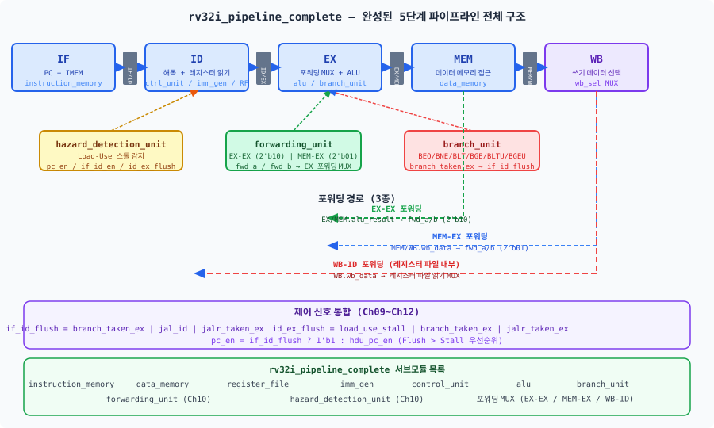
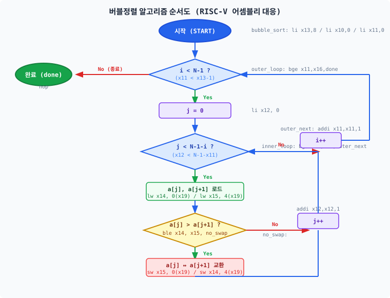
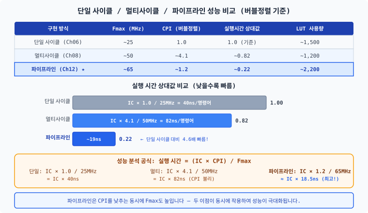

Ch10에서 데이터 해저드를, Ch11에서 제어 해저드를 해결하였습니다. 이제 파이프라인 해저드의 마지막 종류인 구조적 해저드(structural hazard)를 다룹니다. 그리고 모든 모듈을 하나의 최상위 모듈로 통합하여 완성된 RV32I 5단계 파이프라인 프로세서를 완성합니다. 이 챕터의 마지막에서 버블정렬 프로그램을 파이프라인 위에서 실행하는 감동적인 순간을 경험하게 됩니다.
Ch11에서 BNE 루프를 사용한 1~10 합산이 성공적으로 실행되었을 때의 감동을 기억하십니까?
포워딩 유닛과 분기 플러시가 함께 동작하며 x2 = 55라는 정확한 결과를 냈습니다.
이제 그 기반 위에 마지막 두 조각을 올릴 차례입니다.
두 조각만 채우면 파이프라인은 완성됩니다. 첫 번째 조각은 구조적 해저드의 마지막 잔여분 — 레지스터 파일의 동시 읽기-쓰기 충돌입니다. 두 번째 조각은 전체 모듈 통합입니다. 그리고 완성된 파이프라인 위에서 버블정렬이 실행되는 순간, Part 4의 감정적 클라이맥스가 찾아옵니다.
RISC-V 파이프라인 프로세서에서 발생할 수 있는 해저드는 정확히 세 종류입니다. Ch10에서 데이터 해저드(data hazard)를, Ch11에서 제어 해저드(control hazard)를 처리하였습니다. 이 절이 마지막입니다. 이후에는 새로운 종류의 해저드가 등장하지 않습니다.
구조적 해저드(structural hazard, 구조적 위험)는 여러 명령어가 파이프라인의 동일한 하드웨어 자원을 같은 사이클에 사용하려 할 때 발생합니다. 데이터 해저드가 "값이 아직 준비되지 않은 문제"이고, 제어 해저드가 "경로가 결정되지 않은 문제"라면, 구조적 해저드는 "하드웨어가 물리적으로 하나뿐인 문제"입니다.
5단계 파이프라인에서 구조적 해저드가 발생할 수 있는 자원과 우리 설계의 현황을 정리하면 다음과 같습니다.
| 자원 | 충돌 조건 | 우리 설계의 처리 |
|---|---|---|
| 메모리 | Princeton 구조: IF(명령어 읽기) + MEM(데이터 읽기/쓰기) 동시 접근 | ✅ Harvard 구조 (IMEM/DMEM 분리) — Ch09에서 이미 채택 |
| 레지스터 파일 쓰기 포트 | WB 스테이지가 2개 이상 동시에 레지스터에 쓰려는 경우 | ✅ WB 스테이지 1개 — 동시 충돌 없음 |
| ALU | 멀티사이클에서 여러 스테이지가 같은 ALU를 공유하는 경우 | ✅ 파이프라인은 스테이지별 독립 ALU 사용 |
| 레지스터 파일 읽기-쓰기 | ID 스테이지(읽기) + WB 스테이지(쓰기)가 같은 레지스터를 같은 사이클에 접근 | ⚠️ WB-ID 포워딩 필요 → 12.2절에서 해결 |

그림 12.1을 보면, Princeton 구조(프린스턴 구조, 폰 노이만 구조)에서 사이클 N+4에 INSTR-1의 MEM 스테이지와 INSTR-4의 IF 스테이지가 동시에 같은 메모리 포트를 사용하려 합니다. INSTR-1은 LW/SW로 데이터를 읽거나 쓰고, INSTR-4는 다음 명령어를 인출해야 합니다. 단일 메모리 포트는 이 두 요청을 동시에 처리할 수 없으므로 — 구조적 해저드가 발생합니다. 해결책은 스톨(한 명령어를 기다리게 함) 또는 멀티포트 메모리입니다.
Ch07(멀티사이클 CPU)에서는 Princeton 구조를 사용했지만 구조적 해저드가 발생하지 않았습니다. 그 이유는 멀티사이클이 한 번에 하나의 명령어만 처리하기 때문입니다 — IF와 MEM이 동시에 실행되지 않으므로 메모리 충돌이 발생하지 않습니다. 하지만 파이프라인은 여러 명령어가 동시에 각 스테이지를 점유하므로, 이 충돌이 반드시 발생합니다.

Ch09에서 IMEM과 DMEM을 분리했을 때, 우리는 이미 구조적 해저드의 95%를 예방했습니다. 남은 5% — 레지스터 파일의 Read-During-Write 충돌 — 을 12.2절에서 처리합니다. 그것만 해결되면, 우리 파이프라인의 모든 해저드가 완전히 처리된 것입니다.
Ch10에서 설계한 forwarding_unit은 EX 스테이지에서 필요한 데이터를 앞당겨 공급합니다.
하지만 다음 상황을 생각해 보십시오:
// 4개 명령어 파이프라인 진행 예시
// 사이클 N:
// - INSTR-A: WB 스테이지 — x5에 결과 쓰기
// - INSTR-B: ID 스테이지 — x5를 레지스터 파일에서 읽기
ADD x5, x2, x3 // INSTR-A: WB에서 x5 갱신
LW x6, 0(x5) // INSTR-B: ID에서 x5 읽기 ← 이때 x5의 값은?
INSTR-A가 WB 스테이지에서 x5에 값을 기록하는 바로 그 사이클에, INSTR-B는 ID 스테이지에서 레지스터 파일로부터 x5를 읽으려 합니다. 이 상황이 Read-During-Write(읽기-쓰기 동시 발생) 충돌입니다.

Ch10의 forwarding_unit은 EX 스테이지 입력에 집중합니다:
EX-EX 포워딩(fwd_a=2'b10)과 MEM-EX 포워딩(fwd_a=2'b01)이 전부입니다.
ID 스테이지는 레지스터 파일 읽기 단계이므로, forwarding_unit의 MUX가 개입하기 전 단계입니다.
따라서 WB-ID 충돌은 forwarding_unit이 처리하는 경로 밖에 있습니다.
| 우선순위 | 포워딩 경로 | 담당 모듈 | 신호 |
|---|---|---|---|
| 1 (최우선) | EX-EX: EX/MEM.alu_result → EX ALU 입력 | forwarding_unit | fwd_a=2'b10 |
| 2 | MEM-EX: MEM/WB.wb_data → EX ALU 입력 | forwarding_unit | fwd_a=2'b01 |
| 3 | WB-ID: WB.wb_data → 레지스터 파일 읽기 출력 | register_file 내부 | 조합 논리 (암묵적) |
| 특별 | Load-Use 스톨: 포워딩 불가 → 1사이클 대기 | hazard_detection_unit | pc_en=0, if_id_en=0 |
WB-ID 포워딩은 레지스터 파일의 읽기 포트에 조건부 MUX를 추가하는 방식으로 구현합니다. 핵심 코드는 두 줄입니다:
// ch12_register_file_with_forwarding.sv — 핵심 부분
// 소스 레지스터 1 읽기 (WB-ID 포워딩 적용)
assign rs1_data = (reg_w_en && (rd_addr != 5'b0) && (rd_addr == rs1_addr))
? rd_data // WB-ID 포워딩: WB가 쓰는 값을 즉시 반환
: rf[rs1_addr]; // 일반 읽기: 레지스터 파일에서 읽기
// 소스 레지스터 2 읽기 (WB-ID 포워딩 적용)
assign rs2_data = (reg_w_en && (rd_addr != 5'b0) && (rd_addr == rs2_addr))
? rd_data // WB-ID 포워딩: WB가 쓰는 값을 즉시 반환
: rf[rs2_addr]; // 일반 읽기: 레지스터 파일에서 읽기
포워딩 조건의 세 가지 요소:
reg_w_en: WB 스테이지가 현재 사이클에 레지스터를 쓰려 한다rd_addr != 5'b0: x0에 대한 포워딩은 의미 없으므로 제외 (x0는 항상 0)rd_addr == rs1_addr: WB의 목적지와 ID의 소스 레지스터가 같다지금까지 Ch09~Ch12.2에서 설계한 모든 모듈을 하나의 최상위 모듈로 연결할 시간입니다. 레고 블록을 조립하는 단계입니다 — 개별 블록을 이미 모두 만들었고, 지금은 설명서에 따라 연결만 하면 됩니다. 코드가 길어 보이더라도, 대부분은 이미 여러분이 작성하고 검증한 것들입니다.

모든 항목이 체크되면 버블정렬을 실행할 준비가 됩니다.
최종 top 모듈명은 rv32i_pipeline_complete입니다.
Ch11의 rv32i_pipeline_branch에서 다음 사항이 변경됩니다:
// ch12_rv32i_pipeline_complete.sv — 모듈 선언부
module rv32i_pipeline_complete #(
parameter int DATA_WIDTH = 32, // 데이터 버스 폭 (RV32I: 32비트)
parameter int ADDR_WIDTH = 32, // 주소 버스 폭
parameter int RF_DEPTH = 32, // 레지스터 파일 깊이 (x0~x31)
parameter int IMEM_DEPTH = 1024, // 명령어 메모리 깊이 (워드 단위)
parameter int DMEM_DEPTH = 1024, // 데이터 메모리 깊이 (워드 단위)
parameter IMEM_INIT = "" // 명령어 메모리 초기화 파일 (.hex)
)(
input logic clk,
input logic rst_n
);
Ch11 코드에서 imm_gen과 control_unit은 주석 처리되어 있었습니다.
Ch11에서는 즉치수 추출과 제어 신호 생성을 최상위 모듈 내 인라인 로직(always_comb 블록)으로
직접 처리했기 때문입니다. Ch12에서는 이 두 모듈을 실제로 인스턴스화하여
완전한 독립 모듈 계층 구조를 갖춥니다.
// 즉치수 생성기 (파이프라인 전용 — opcode 기반 자동 타입 감지)
// Ch04 imm_gen과 구별: imm_sel 입력 없이 opcode로 자동 판별
pipeline_imm_gen u_imm_gen (
.instr (if_id_instr),
.imm (imm)
);
// 제어 유닛 (파이프라인 전용 — opcode/funct3/funct7 분리 입력)
// Ch06 control_unit과 구별: 분기 비교는 EX 단계 branch_unit이 담당
pipeline_control_unit u_ctrl (
.opcode (if_id_instr[6:0]),
.funct3 (funct3_id),
.funct7 (if_id_instr[31:25]),
.reg_w_en (reg_w_en),
.mem_read (mem_read),
.mem_write (mem_write),
.branch (branch_id),
.a_sel (a_sel),
.b_sel (b_sel),
.alu_sel (alu_sel),
.wb_sel (wb_sel)
);
Ch12에서 수정된 register_file은 WB-ID 포워딩을 내장하므로,
상위 모듈에서는 기존과 동일하게 포트를 연결하면 됩니다. 추가 신호 연결이 필요 없습니다.
// register_file 인스턴스 — WB-ID 포워딩은 내부에서 처리
// Ch11과 동일한 포트 연결 (포워딩 유닛 수정 없음)
register_file u_rf (
.clk (clk),
.rst_n (rst_n),
.rs1_addr (rs1_addr),
.rs2_addr (rs2_addr),
.rd_addr (mem_wb_rd), // WB 스테이지 rd
.rd_data (wb_data), // WB 스테이지 쓰기 데이터
.reg_w_en (mem_wb_reg_w_en), // WB 스테이지 쓰기 인에이블
.rs1_data (rs1_data),
.rs2_data (rs2_data)
);
버블정렬을 실행하기 전에 간단한 시퀀스로 통합 동작을 먼저 확인합니다. 이 단계를 통과해야 버블정렬 실패 시 "통합 문제"인지 "버블정렬 코드 문제"인지 빠르게 격리할 수 있습니다.
최소 검증 시퀀스 (NOP 없음, 포워딩과 Load-Use 스톨 포함):
// 최소 검증용 기계어 시퀀스 (테스트벤치에서 직접 초기화)
dut.u_imem.mem[0] = 32'h00A00093; // ADDI x1, x0, 10 → x1 = 10
dut.u_imem.mem[1] = 32'h01400113; // ADDI x2, x0, 20 → x2 = 20
dut.u_imem.mem[2] = 32'h002081B3; // ADD x3, x1, x2 → x3 = 30 (EX-EX 포워딩)
dut.u_imem.mem[3] = 32'h00302023; // SW x3, 0(x0) → mem[0] = 30
dut.u_imem.mem[4] = 32'h00002203; // LW x4, 0(x0) → x4 = 30 (Load-Use 스톨)
dut.u_imem.mem[5] = 32'h003202B3; // ADD x5, x4, x3 → x5 = 60 (MEM-EX 포워딩)
// 검증: x5 == 60, DMEM[0] == 30 이면 최소 검증 통과
Ch09에서 NOP을 삽입하며 첫 파이프라인을 돌렸던 것을 기억하십니까? 이제 NOP 없이, 포워딩 유닛과 분기 처리가 완비된 상태에서 버블정렬 전체를 실행합니다. 버블정렬은 루프, 조건 분기, 메모리 로드-스토어를 모두 포함하는 최소 복잡도 알고리즘입니다.
이 프로그램이 성공적으로 실행된다면, 여러분의 파이프라인은 RV32I 프로그래머가 실행하는 모든 기본 코드를 처리할 수 있다는 의미입니다. 루프(JAL), 분기(BGE/BLE), 메모리 접근(LW/SW), 연산(ADD/SUB/SLLI) — 모두 포함됩니다.

먼저 메모리의 두 원소를 비교하고 교환하는 가장 단순한 경우를 이해합니다.
// 어셈블리: mem[0], mem[1] 두 값 비교 후 교환
// 레지스터: x1=배열 기저 주소(0), x2=a[0], x3=a[1]
// LW x2, 0(x1) # a[0] 읽기
// LW x3, 4(x1) # a[1] 읽기
// BGE x2, x3, done # a[0] <= a[1]이면 종료 (오름차순)
// SW x3, 0(x1) # a[0] = a[1] (교환)
// SW x2, 4(x1) # a[1] = a[0] (교환)
// done: NOP
// 기계어 (테스트벤치 직접 초기화):
// dut.u_imem.mem[0] = 32'h0000A103; // LW x2, 0(x1)
// dut.u_imem.mem[1] = 32'h0040A183; // LW x3, 4(x1)
// dut.u_imem.mem[2] = 32'h00315463; // BGE x2, x3, +8 (done)
// dut.u_imem.mem[3] = 32'h0030A023; // SW x3, 0(x1)
// dut.u_imem.mem[4] = 32'h0020A223; // SW x2, 4(x1)
// dut.u_imem.mem[5] = 32'h00000013; // NOP (done)
레지스터 역할 배분을 참고하여 내부 루프를 완성합니다.
// 레지스터 역할 배분:
// x10 (a0) = 배열 베이스 주소 (0)
// x11 (a1) = 외부 루프 카운터 i
// x12 (a2) = 내부 루프 카운터 j
// x13 (a3) = N = 8
// x14 (a4) = a[j]
// x15 (a5) = a[j+1]
// x16 (a6) = N-1
// x17 (a7) = N-1-i (내부 루프 한계)
// x18 (s2) = j*4 (바이트 오프셋)
// x19 (s3) = &a[j] (주소)
// 내부 루프 핵심 부분:
// slli x18, x12, 2 # x18 = j * 4 (바이트 오프셋)
// add x19, x10, x18 # x19 = 배열 기저 + 오프셋 = &a[j]
// lw x14, 0(x19) # x14 = a[j]
// lw x15, 4(x19) # x15 = a[j+1]
// ble x14, x15, no_swap # a[j] <= a[j+1]이면 교환 불필요
// sw x15, 0(x19) # a[j] = a[j+1]
// sw x14, 4(x19) # a[j+1] = a[j]
테스트 배열: [64, 5, 66, 30, 88, 17, 42, 9] → 정렬 후: [5, 9, 17, 30, 42, 64, 66, 88]
// 버블정렬 전체 어셈블리 (레이블 → PC 오프셋 대응 포함)
// bubble_sort (PC=0x000):
// ADDI x13, x0, 8 # N = 8
// ADDI x10, x0, 0 # 배열 베이스 = 0
// ADDI x11, x0, 0 # i = 0
//
// outer_loop (PC=0x00C):
// ADDI x16, x13, -1 # N-1
// BGE x11, x16, done # i >= N-1이면 종료 (PC 0x010 → done 0x04C, +0x3C)
// ADDI x12, x0, 0 # j = 0
//
// inner_loop (PC=0x018):
// SUB x17, x16, x11 # x17 = N-1-i
// BGE x12, x17, outer_next # j >= N-1-i이면 외부 루프 (→ outer_next +0x28)
// SLLI x18, x12, 2 # j*4
// ADD x19, x10, x18 # &a[j]
// LW x14, 0(x19) # a[j]
// LW x15, 4(x19) # a[j+1]
// BGE x15, x14, no_swap # a[j] <= a[j+1]이면 no_swap (+0xC)
// SW x15, 0(x19) # 교환
// SW x14, 4(x19) # 교환
//
// no_swap (PC=0x03C):
// ADDI x12, x12, 1 # j++
// JAL x0, inner_loop # → 0x018 (-0x28)
//
// outer_next (PC=0x044):
// ADDI x11, x11, 1 # i++
// JAL x0, outer_loop # → 0x00C (-0x3C)
//
// done (PC=0x04C):
// ADDI x0, x0, 0 # NOP (종료 마커)
$readmemh를 사용하는 대신, 테스트벤치에서 DUT 내부 메모리를 직접 초기화합니다.
이 방식은 헥스 파일 없이도 즉시 시뮬레이션을 실행할 수 있어 디버깅에 유리합니다.
// 테스트벤치 (ch12_pipeline_complete_tb.sv) 핵심 초기화 부분
// IMEM 초기화 — 버블정렬 기계어
dut.u_imem.mem[0] = 32'h00800693; // ADDI x13, x0, 8 (N=8)
dut.u_imem.mem[1] = 32'h00000513; // ADDI x10, x0, 0 (베이스=0)
dut.u_imem.mem[2] = 32'h00000593; // ADDI x11, x0, 0 (i=0)
// outer_loop:
dut.u_imem.mem[3] = 32'hFFF68813; // ADDI x16, x13, -1
dut.u_imem.mem[4] = 32'h0305DE63; // BGE x11, x16, +60 (done) [funct3=101=BGE]
dut.u_imem.mem[5] = 32'h00000613; // ADDI x12, x0, 0 (j=0)
// inner_loop:
dut.u_imem.mem[6] = 32'h40B808B3; // SUB x17, x16, x11
// ... (ch12_pipeline_complete_tb.sv 전체 소스 코드 섹션 참조)
// DMEM 초기화 — 정렬 대상 배열 [64, 5, 66, 30, 88, 17, 42, 9]
dut.u_dmem.mem[0] = 32'd64;
dut.u_dmem.mem[1] = 32'd5;
dut.u_dmem.mem[2] = 32'd66;
dut.u_dmem.mem[3] = 32'd30;
dut.u_dmem.mem[4] = 32'd88;
dut.u_dmem.mem[5] = 32'd17;
dut.u_dmem.mem[6] = 32'd42;
dut.u_dmem.mem[7] = 32'd9;
시뮬레이션을 실행하면 다음과 같은 출력을 확인하게 됩니다:
--- 버블정렬 결과 ---
인덱스 실제값 기대값 판정
a[0] 5 5 OK
a[1] 9 9 OK
a[2] 17 17 OK
a[3] 30 30 OK
a[4] 42 42 OK
a[5] 64 64 OK
a[6] 66 66 OK
a[7] 88 88 OK
╔══════════════════════════════════════════════╗
║ [PASS] 버블정렬 완료! ║
║ 모든 해저드 처리가 정확히 동작하였습니다. ║
║ 포워딩 + Load-Use 스톨 + 분기 플러시 ║
║ + WB-ID 포워딩 모두 검증 완료! ║
╚══════════════════════════════════════════════╝
파형에서 [PASS] 메시지를 확인한 순간, 여러분이 느끼는 감정이 무엇인지 저는 알고 있습니다. 복잡한 포워딩 경로가 의도대로 동작하고, 분기 명령어가 정확히 플러시를 유발하며, 배열이 올바르게 정렬된 결과를 한 번에 얻어냈습니다. 이것이 하드웨어 설계자가 경험하는 '검증 성공'의 순간입니다.
버블정렬을 성공적으로 실행했습니다. 이제 단일 사이클(Ch06), 멀티사이클(Ch08), 파이프라인(Ch12) 세 가지로 각각 실행한다면 어느 것이 가장 빠를까요? 그 이유를 먼저 생각해보십시오.
다음 표는 수치 없이 상대적 관계만 나타낸 것입니다:
| 구현 | CPI (이상적) | 클럭 주파수 |
|---|---|---|
| 단일 사이클 | 1.0 (항상) | 느림 (임계 경로 = 가장 긴 명령어) |
| 멀티사이클 | 3~5 (명령어 유형별) | 중간 (짧은 스테이지 경로) |
| 파이프라인 | ≈1 + 해저드 페널티 | 빠름 (단계별 분할로 임계 경로 단축) |
CPI만 보면 단일 사이클과 파이프라인이 비슷합니다. 그런데 왜 파이프라인을 쓸까요? 잠시 생각해 보십시오. 답은 바로 클럭 주파수의 차이에 있습니다.

(낮을수록 좋은 값: CPI, 실행시간 상대값 | 높을수록 좋은 값: Fmax | LUT 사용량은 면적 비용으로 작을수록 경제적)
| 구현 | Fmax (MHz) | CPI (버블정렬) | 실행시간 상대값 ↓ | LUT 사용량 |
|---|---|---|---|---|
| 단일 사이클 (Ch06) | ~25 | 1.0 | 1.0 (기준) | ~1,500 |
| 멀티사이클 (Ch08) | ~50 | ~4.1 | ~2.05 (느림) | ~1,200 |
| 파이프라인 (Ch12) ★ | ~65 | ~1.2 | ~0.46 (가장 빠름) | ~2,200 |
예측이 맞았습니까? 어디서 틀렸습니까?
핵심 분석 공식: 실행 시간 = (IC × CPI) / Fmax
파이프라인이 단일 사이클보다 약 2.2배 빠르고(40/18.5≈2.16), 멀티사이클보다 약 4.4배 빠릅니다(82/18.5≈4.4). 파이프라인은 CPI를 낮추는 동시에 Fmax도 높입니다 — 두 이점이 동시에 작용하여 성능이 극대화됩니다.
의외의 결과: 멀티사이클은 Fmax가 단일 사이클의 2배(~50MHz)이지만, CPI가 4.1로 높아 실행 시간은 오히려 단일 사이클보다 2배 이상 느립니다. CPI와 Fmax를 함께 고려해야 하는 이유입니다.
그렇다면 파이프라인이 항상 최선일까요?
| Ch09 | 파이프라인 레지스터 설계 (IF/ID/EX/MEM/WB 5단계) | ✅ |
| Ch10 | 포워딩 유닛 + Load-Use 스톨 (EX-EX, MEM-EX) | ✅ |
| Ch11 | 분기 처리 + Flush 메커니즘 + JAL/JALR | ✅ |
| Ch12 | 구조적 해저드 처리 + WB-ID 포워딩 + 전체 통합 | ✅ |
여러분은 RV32I 5단계 파이프라인 프로세서를 처음부터 끝까지 설계하고 검증하였습니다.
이것은 대학원 수준의 디지털 설계 역량입니다.
버블정렬 외에도 퀵정렬, 링크드 리스트 순회, 재귀 함수 — 이 모든 프로그램을 지금 여러분이 설계한 프로세서 위에서 실행할 수 있습니다. 어셈블리로 작성하든, C로 크로스 컴파일하든 방법만 다를 뿐입니다.
여러분이 완성한 파이프라인은 이론적으로 CPI ≈ 1에 가깝습니다. 그런데 한 가지 가정이 숨어 있습니다: 메모리 접근이 항상 1사이클에 완료된다는 가정입니다.
| 메모리 종류 | 접근 시간 | LW 명령어 CPI |
|---|---|---|
| 현재 가정 (BRAM 1사이클) | 1사이클 | ~1 |
| 실제 SRAM | 2~4사이클 | ~3 |
| 실제 DRAM | 100~300사이클 | ~200 |
만약 LW 명령어가 매번 DRAM에 접근해야 한다면, CPI는 1이 아니라 100이 넘을 것입니다. 버블정렬에서 LW 명령어가 20% 이상을 차지한다면, 전체 CPI는 40 이상으로 폭등합니다. 이 문제를 해결하는 것이 캐시(Cache) — Ch13의 주제입니다.
캐시는 파이프라인을 버리고 새로 만드는 것이 아닙니다. 지금까지 완성한 파이프라인 프로세서에 메모리 가속 장치를 추가하는 것입니다. 새 언어, 새 ISA, 새 개념 체계가 아닙니다 — 여러분이 이미 아는 메모리, 스톨, 제어 신호 위에서 진행됩니다.
register_file의 포워딩 조건 코드를 작성하라.
ADD x1, x2, x3 // WB 스테이지 진입 (x1에 결과 쓰기)
LW x4, 0(x1) // ID 스테이지 (x1 필요)LW x14, 0(x19), LW x15, 4(x19), BGE x15, x14, no_swap 시퀀스에서 발생하는 모든 해저드를 찾고, 각 해저드를 처리하는 하드웨어 메커니즘(포워딩/스톨/플러시 중 해당 사항)을 표로 정리하라.
cycle_count(총 클럭 사이클)와 instr_count(WB 스테이지를 통과한 명령어 수)를 별도 레지스터로 관리하고, 버블정렬 완료 후 시뮬레이션에서 실제 CPI를 출력하라. (힌트: instr_count는 mem_wb_reg_w_en이 활성화되거나 NOP이 아닌 명령어가 WB에 진입할 때 증가)
이 챕터에서 단계별로 설명한 모든 모듈의 완전한 소스 코드입니다. 본문에서 이미 각 코드의 동작 원리를 설명하였으므로, 지금 당장 전부를 이해하려 하지 않아도 됩니다. 이 코드는 다음 챕터에서 그대로 재사용합니다. 참고용으로 활용하십시오.
// ============================================================================
// ch12_register_file_with_forwarding.sv
// Chapter 12 — 구조적 해저드와 파이프라인 완성
// ============================================================================
// ch04_register_file.sv 기반에 WB-ID 포워딩(Read-During-Write) 추가
//
// Ch10의 forwarding_unit은 수정하지 않습니다.
// WB-ID 포워딩을 레지스터 파일 내부에서 독립적으로 처리합니다.
// ============================================================================
`timescale 1ns / 1ps
module register_file (
input logic clk,
input logic rst_n,
input logic [4:0] rs1_addr,
output logic [31:0] rs1_data,
input logic [4:0] rs2_addr,
output logic [31:0] rs2_data,
input logic [4:0] rd_addr,
input logic [31:0] rd_data,
input logic reg_w_en
);
logic [31:0] rf [0:31];
// 동기 쓰기 — x0 쓰기 무시, 리셋 시 전체 초기화
always_ff @(posedge clk or negedge rst_n) begin
if (!rst_n) begin
for (int i = 0; i < 32; i++) rf[i] <= 32'b0;
end
else if (reg_w_en && (rd_addr != 5'b0)) begin
rf[rd_addr] <= rd_data;
end
end
// 비동기 읽기 — WB-ID 포워딩 포함
// 포워딩 조건: WB가 현재 사이클에 같은 레지스터를 쓰려 한다면
// 레지스터 파일 대신 WB 데이터를 즉시 반환
assign rs1_data = (reg_w_en && (rd_addr != 5'b0) && (rd_addr == rs1_addr))
? rd_data : rf[rs1_addr];
assign rs2_data = (reg_w_en && (rd_addr != 5'b0) && (rd_addr == rs2_addr))
? rd_data : rf[rs2_addr];
endmodule
// ============================================================================
// ch12_rv32i_pipeline_complete.sv
// Chapter 12 — 5단계 파이프라인 최종 완성 top 모듈
// ch11_pipeline_with_branch.sv 기반 수정:
// - 모듈명 변경: rv32i_pipeline_complete
// - DATA_WIDTH/ADDR_WIDTH/RF_DEPTH 파라미터 추가
// - register_file: WB-ID 포워딩 내장 버전 사용
// - imm_gen, control_unit 실제 인스턴스화 (주석 해제)
// 해저드 처리 완성:
// - RAW: EX-EX(2'b10), MEM-EX(2'b01) 포워딩
// - Load-Use: hazard_detection_unit 스톨
// - 제어: branch_unit + flush 제어 (Flush > Stall)
// - 구조적: Harvard 구조 + WB-ID 레지스터 파일 포워딩
// ============================================================================
`timescale 1ns / 1ps
module rv32i_pipeline_complete #(
parameter int DATA_WIDTH = 32,
parameter int ADDR_WIDTH = 32,
parameter int RF_DEPTH = 32,
parameter int IMEM_DEPTH = 1024,
parameter int DMEM_DEPTH = 1024,
parameter IMEM_INIT = ""
)(
input logic clk,
input logic rst_n
);
// --- PC 관련 ---
logic [31:0] pc, pc_plus4, pc_next;
// --- 해저드/스톨 제어 ---
logic load_use_stall, pc_en, if_id_en, hdu_pc_en;
logic branch_taken_ex, jal_id, jalr_taken_ex;
logic if_id_flush, id_ex_flush;
logic [1:0] fwd_a, fwd_b;
logic [31:0] alu_src_a, alu_src_b, fwd_b_data;
// --- IF/ID 파이프라인 레지스터 ---
logic [31:0] if_id_pc, if_id_pc_plus4, if_id_instr;
// --- ID/EX 파이프라인 레지스터 ---
logic [31:0] id_ex_pc, id_ex_pc_plus4, id_ex_rs1_data, id_ex_rs2_data, id_ex_imm;
logic [4:0] id_ex_rs1, id_ex_rs2, id_ex_rd;
logic id_ex_reg_w_en, id_ex_mem_read, id_ex_mem_write;
logic id_ex_a_sel, id_ex_b_sel;
logic [3:0] id_ex_alu_sel;
logic [1:0] id_ex_wb_sel;
logic [2:0] id_ex_funct3;
logic id_ex_branch, id_ex_jalr;
// --- EX/MEM 파이프라인 레지스터 ---
logic [31:0] ex_mem_alu_result, ex_mem_rs2_data, ex_mem_pc_plus4;
logic [4:0] ex_mem_rd;
logic ex_mem_reg_w_en, ex_mem_mem_read, ex_mem_mem_write;
logic [1:0] ex_mem_wb_sel;
// --- MEM/WB 파이프라인 레지스터 ---
logic [31:0] mem_wb_alu_result, mem_wb_mem_data, mem_wb_pc_plus4;
logic [4:0] mem_wb_rd;
logic mem_wb_reg_w_en;
logic [1:0] mem_wb_wb_sel;
logic [31:0] wb_data;
// PC 레지스터
always_ff @(posedge clk or negedge rst_n) begin
if (!rst_n) pc <= 32'h0000_0000;
else if (pc_en) pc <= pc_next;
end
assign pc_plus4 = pc + 32'd4;
// pc_next 4-way MUX
logic [31:0] branch_target, jal_target, jalr_target, imm_J;
assign imm_J = {{12{if_id_instr[31]}}, if_id_instr[19:12],
if_id_instr[20], if_id_instr[30:21], 1'b0};
assign jal_id = (if_id_instr[6:0] == 7'b1101111);
assign jal_target = if_id_pc + imm_J;
assign branch_target = id_ex_pc + id_ex_imm;
assign jalr_taken_ex = id_ex_jalr;
assign jalr_target = (alu_src_a + id_ex_imm) & ~32'h1;
always_comb begin
priority if (branch_taken_ex) pc_next = branch_target;
else if (jalr_taken_ex) pc_next = jalr_target;
else if (jal_id) pc_next = jal_target;
else pc_next = pc_plus4;
end
// Flush / Stall 통합 제어
assign if_id_flush = branch_taken_ex | jal_id | jalr_taken_ex;
assign id_ex_flush = load_use_stall | branch_taken_ex | jalr_taken_ex;
assign pc_en = if_id_flush ? 1'b1 : hdu_pc_en;
// IF: IMEM (Harvard 구조 — 명령어 전용)
logic [31:0] instr;
instruction_memory #(.DEPTH(IMEM_DEPTH), .INIT_FILE(IMEM_INIT)) u_imem (
.addr(pc), .rdata(instr)
);
// IF/ID 레지스터
always_ff @(posedge clk or negedge rst_n) begin
if (!rst_n || if_id_flush) begin
if_id_pc <= 32'b0; if_id_pc_plus4 <= 32'b0;
if_id_instr <= 32'h0000_0013;
end else if (if_id_en) begin
if_id_pc <= pc; if_id_pc_plus4 <= pc_plus4; if_id_instr <= instr;
end
end
// ID: 레지스터 파일, imm_gen, control_unit
logic [4:0] rs1_addr, rs2_addr, rd_addr;
logic [31:0] rs1_data, rs2_data, imm;
logic reg_w_en, mem_read, mem_write, a_sel, b_sel;
logic [3:0] alu_sel;
logic [1:0] wb_sel;
logic [2:0] funct3_id;
logic branch_id, jalr_id;
assign rs1_addr = if_id_instr[19:15];
assign rs2_addr = if_id_instr[24:20];
assign rd_addr = if_id_instr[11:7];
assign funct3_id = if_id_instr[14:12];
assign jalr_id = (if_id_instr[6:0] == 7'b1100111);
// 레지스터 파일 (WB-ID 포워딩 내장)
register_file u_rf (
.clk(clk), .rst_n(rst_n),
.rs1_addr(rs1_addr), .rs2_addr(rs2_addr),
.rd_addr(mem_wb_rd), .rd_data(wb_data), .reg_w_en(mem_wb_reg_w_en),
.rs1_data(rs1_data), .rs2_data(rs2_data)
);
imm_gen u_imm_gen (.instr(if_id_instr), .imm(imm));
control_unit u_ctrl (
.opcode(if_id_instr[6:0]), .funct3(funct3_id), .funct7(if_id_instr[31:25]),
.reg_w_en(reg_w_en), .mem_read(mem_read), .mem_write(mem_write),
.branch(branch_id), .a_sel(a_sel), .b_sel(b_sel), .alu_sel(alu_sel), .wb_sel(wb_sel)
);
// ID/EX 레지스터
always_ff @(posedge clk or negedge rst_n) begin
if (!rst_n || id_ex_flush) begin
id_ex_pc <= '0; id_ex_pc_plus4 <= '0; id_ex_rs1_data <= '0;
id_ex_rs2_data <= '0; id_ex_imm <= '0;
id_ex_rs1 <= '0; id_ex_rs2 <= '0; id_ex_rd <= '0;
id_ex_reg_w_en <= '0; id_ex_mem_read <= '0; id_ex_mem_write <= '0;
id_ex_a_sel <= '0; id_ex_b_sel <= '0; id_ex_alu_sel <= '0;
id_ex_wb_sel <= '0; id_ex_funct3 <= '0; id_ex_branch <= '0; id_ex_jalr <= '0;
end else begin
id_ex_pc <= if_id_pc; id_ex_pc_plus4 <= if_id_pc_plus4;
id_ex_rs1_data <= rs1_data; id_ex_rs2_data <= rs2_data; id_ex_imm <= imm;
id_ex_rs1 <= rs1_addr; id_ex_rs2 <= rs2_addr; id_ex_rd <= rd_addr;
id_ex_reg_w_en <= reg_w_en; id_ex_mem_read <= mem_read; id_ex_mem_write <= mem_write;
id_ex_a_sel <= a_sel; id_ex_b_sel <= b_sel; id_ex_alu_sel <= alu_sel;
id_ex_wb_sel <= wb_sel; id_ex_funct3 <= funct3_id;
id_ex_branch <= branch_id; id_ex_jalr <= jalr_id;
end
end
// EX: 포워딩 MUX + ALU + branch_unit
always_comb begin
case (fwd_a)
2'b00: alu_src_a = id_ex_rs1_data;
2'b10: alu_src_a = ex_mem_alu_result;
2'b01: alu_src_a = wb_data;
default: alu_src_a = id_ex_rs1_data;
endcase
end
always_comb begin
case (fwd_b)
2'b00: fwd_b_data = id_ex_rs2_data;
2'b10: fwd_b_data = ex_mem_alu_result;
2'b01: fwd_b_data = wb_data;
default: fwd_b_data = id_ex_rs2_data;
endcase
end
logic [31:0] alu_a, alu_b, alu_result;
assign alu_a = id_ex_a_sel ? id_ex_pc : alu_src_a;
assign alu_b = id_ex_b_sel ? id_ex_imm : fwd_b_data;
alu u_alu (.a(alu_a), .b(alu_b), .alu_sel(id_ex_alu_sel), .result(alu_result));
branch_unit u_branch (.rs1_data(alu_src_a), .rs2_data(fwd_b_data),
.funct3(id_ex_funct3), .branch(id_ex_branch), .branch_taken(branch_taken_ex));
// EX/MEM 레지스터
always_ff @(posedge clk or negedge rst_n) begin
if (!rst_n) begin
ex_mem_alu_result <= '0; ex_mem_rs2_data <= '0; ex_mem_pc_plus4 <= '0;
ex_mem_rd <= '0; ex_mem_reg_w_en <= '0; ex_mem_mem_read <= '0;
ex_mem_mem_write <= '0; ex_mem_wb_sel <= '0;
end else begin
ex_mem_alu_result <= alu_result; ex_mem_rs2_data <= fwd_b_data;
ex_mem_rd <= id_ex_rd; ex_mem_reg_w_en <= id_ex_reg_w_en;
ex_mem_mem_read <= id_ex_mem_read; ex_mem_mem_write <= id_ex_mem_write;
ex_mem_wb_sel <= id_ex_wb_sel; ex_mem_pc_plus4 <= id_ex_pc_plus4;
end
end
// MEM: DMEM (Harvard 구조 — 데이터 전용)
logic [31:0] mem_rdata;
data_memory #(.DEPTH(DMEM_DEPTH)) u_dmem (
.clk(clk), .addr(ex_mem_alu_result), .wdata(ex_mem_rs2_data),
.we(ex_mem_mem_write), .re(ex_mem_mem_read), .rdata(mem_rdata)
);
// MEM/WB 레지스터
always_ff @(posedge clk or negedge rst_n) begin
if (!rst_n) begin
mem_wb_alu_result <= '0; mem_wb_mem_data <= '0; mem_wb_pc_plus4 <= '0;
mem_wb_rd <= '0; mem_wb_reg_w_en <= '0; mem_wb_wb_sel <= '0;
end else begin
mem_wb_alu_result <= ex_mem_alu_result; mem_wb_mem_data <= mem_rdata;
mem_wb_rd <= ex_mem_rd; mem_wb_reg_w_en <= ex_mem_reg_w_en;
mem_wb_wb_sel <= ex_mem_wb_sel; mem_wb_pc_plus4 <= ex_mem_pc_plus4;
end
end
// WB: 데이터 선택
always_comb begin
case (mem_wb_wb_sel)
2'b00: wb_data = mem_wb_alu_result;
2'b01: wb_data = mem_wb_mem_data;
2'b10: wb_data = mem_wb_pc_plus4;
default: wb_data = mem_wb_alu_result;
endcase
end
// 포워딩 유닛 (Ch10 — 수정 없음)
forwarding_unit u_fwd (
.id_ex_rs1(id_ex_rs1), .id_ex_rs2(id_ex_rs2),
.ex_mem_reg_w_en(ex_mem_reg_w_en), .ex_mem_rd(ex_mem_rd),
.mem_wb_reg_w_en(mem_wb_reg_w_en), .mem_wb_rd(mem_wb_rd),
.fwd_a(fwd_a), .fwd_b(fwd_b)
);
// 해저드 감지 유닛 (Ch10 — 수정 없음)
hazard_detection_unit u_hazard (
.id_ex_mem_read(id_ex_mem_read), .id_ex_rd(id_ex_rd),
.if_id_rs1(rs1_addr), .if_id_rs2(rs2_addr),
.pc_en(hdu_pc_en), .if_id_en(if_id_en), .id_ex_flush(load_use_stall)
);
endmodule
// 버블정렬 테스트 핵심 부분 (전체 코드: code_examples/ch12_pipeline_complete_tb.sv)
// DMEM 초기화 — 정렬 대상 배열 [64, 5, 66, 30, 88, 17, 42, 9]
dut.u_dmem.mem[0] = 32'd64;
dut.u_dmem.mem[1] = 32'd5;
dut.u_dmem.mem[2] = 32'd66;
dut.u_dmem.mem[3] = 32'd30;
dut.u_dmem.mem[4] = 32'd88;
dut.u_dmem.mem[5] = 32'd17;
dut.u_dmem.mem[6] = 32'd42;
dut.u_dmem.mem[7] = 32'd9;
// 2000 클럭 후 결과 확인
repeat(2000) @(posedge clk);
// 기대 결과: [5, 9, 17, 30, 42, 64, 66, 88]